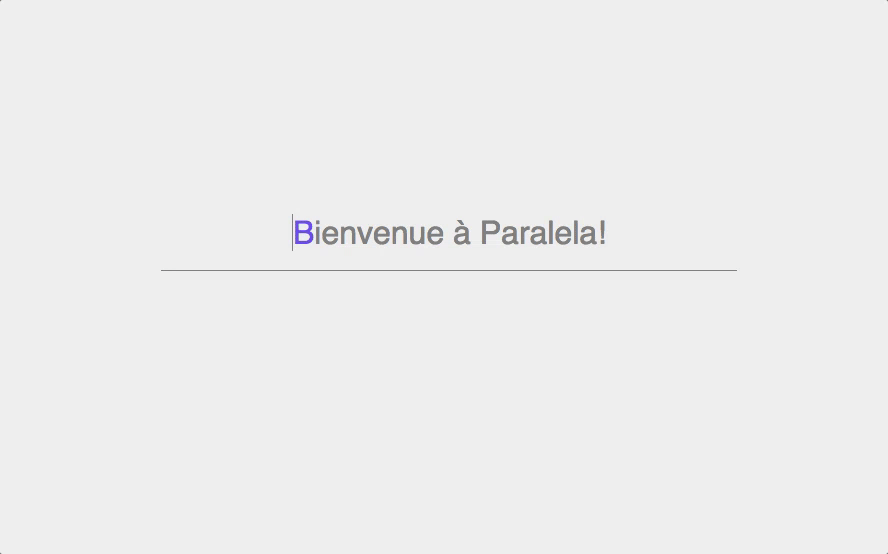
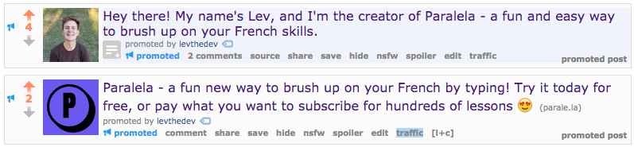
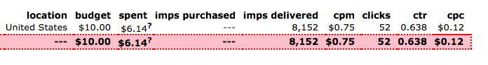
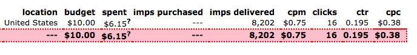

Paralela was the first MVP that I built as part of a 12 MVPs in 12 months project that I've started in 2017. This 12 in 12 idea was largely inspired by Pieter Levels, creator of NomadList and RemoteOK.
Paralela is a fun new way to practice your foreign language skills. It has you type out sentences in the language you are learning or brushing up on, and then shows you a live translation of the words as you type them. Then, the next day, you get an email with the important vocab from the prior day's lessons. Below is an example of the typing aspect.
Paralela was an experiment in a number of ways for me. It was the first app that I've built outside of company time that charges users money, and it also is (as far as I can tell) the first Pay What You Want SaaS. I chose this revenue model mostly out of curiosity - what would people pay on average? Would anyone even buy it? Would it be too confusing for people?
The answers to those questions are, in order, $2.50, yes, and no. Meaning that I actually had paying customers, they paid a bit above the minimum of $1, and no customers were confused about the payment model (non-customers, on the other hand, were quite vocal about how terrible of an idea they thought it was).
Getting my first paying customer ever was an exhilirating feeling - even though this project didn't generate enough revenue to convince me to spend more time marketing it or building out features, it still is an amazing feeling to get that first Stripe notification that a total stranger (from halfways across the country), has decided to pay you actual money.
For marketing, I did a number of "launches" on different forums, as well as a small paid ad campaign. Below is a list of places that I launched.
In total, I recieved just over 100 upvotes.
I paid $20 for 2 Reddit advertisement campaigns. I mostly did this for A/B testing and to try doing some ad campaigns, as I had never done any paid ad campaigns before. You can see the two ads below.
I tried 2 strategies with these Reddit ads. 1 ad was just the Paralela logo and had more information about the price and the product, and the other ad was a picture of me smiling with almost no information besides the fact that the product was for helping with French skills. As you can see in the screenshots below, the ad with my face did much better. It had a 0.638% CTR, while the more generic and informative as had only a 0.195% CTR.
This Reddit campaign taught me a valuable lesson about scale. My Cost Per Click was $0.12, and my conversion rate was 1%, meaning that I had a Customer Acquisition Cost of $12. My Average Monthly Revenue per Customer was just over $2, meaning that if my customers stayed for on average 6 months (or in other words, if my churn is beneath 15% or so), I have a profitable customer acquisition method. In theory, this means that I could pump $1,200,000 into Reddit ads, get 100,000 customers, and with 10% churn, make over $400,000 in profit.
The valuable lesson in here is the fact that making $400,000 from Paralela is not going to happen. For one, There aren't 1,000,000 people I can even advertise to in Paralela's niche on Reddit. There are maybe 100,000 people in the niche of learning French or Spanish on Reddit. Yes, I could advertise to subreddits outside of this niche, but this would presumably greatly decrease my CTR and thereofre increase my CAC. In addition to this, CAC and CTR all are bound to change over time. I might just have a fluke on my hands that makes it seem like my customer LTV is higher than CAC.
So the key takeaway is that CTR, CAC, LTC, and churn rate are not the only important aspects of running a business. Market size, product quality, economies and diseconomies of scale - these are a few of the many hundreds of aspects to take into account when running a business. Don't let any startup guru trick you into thinking that if your CAC is lower than your LTV, you will become fabulously wealthy.
 In terms of how that actually related to clicks, the below Google Analytics graph gives some insight.
You can see that there is an initial spike of a few hundred users - about 200 came from Reddit, another 100 from IndieHackers, 60 from HackerNews, 10 from ProductHunt, and about 100 others from various sources without a referral URL.
After this initial spike, there is very little traffic for about 2 weeks, and the suddenly, there is another spike. This spike has a referral source of Tumblr, though I still haven't actually found who shared the link.
In total, as of 2/28/17, there have been about 1000 sessions, 835 users, and 2048 pageviews. The average session duration is 40 seconds, which seems high - I believe this is because the demo takes about a minute to complete. You can also see that about 90% of my traffic was from English speaking countries, but 10% was from a mixture of French, Spanish, and German speaking countries. Lastly, about a quarter of my traffic was on mobile, which is unfortunate - Paralela is not responsive and is actually quite unuseable on mobile. In the future, focusing on responsive design and internationalization early on could help 30% of my users who are on their phones or are not English speakers.
I built Paralela with Sinatra (my favorite micro server framework) and vanilla Javascript (that's right, no Webpack, no ES2017, no React, no Node, no Express, no ES2055, nothing). I hosted the server on a cheap Heroku instance, although in retrospect, I wish that I had just used DigitalOcean (cheaper, more control).
I made a lot of mistakes with Paralela, which was to be expected. For one, the name is pretty bad. I initally wanted to launch with Spanish language support (in addition to French), and so I named the site Paralela, which means Parallel in Spanish. I chose this name because I could get a "unqiue" domain name and it because it was topical.
It turned out that "unique" domain names are pretty bad, and I still haven't launched Spanish language support. So the name makes no sense, is hard to type because of it's unique TLD, and it hard to search for because it is a common Spanish word.
I also didn't leave enough time for marketing and design. Like many engineers, I want to write code as long as I can to avoid doing other important tasks. Really, I should have reduced the technical scope of the project, made the site mobile responsive, spent more time designing the dashboard, and spent much more time marketing.
I feel ok about Paralela - not great but not bad either. I made my first every paying customers, I got around 100 upvotes in forums, had about 1000 visitors to the site and 2000 page views, and ran a paid ads campaign for the first time. Paralela is nowhere near ramen profitable, but is a good first step for me on my journey to finding a product that sticks.
If you're interested, you can check out Paralela here.